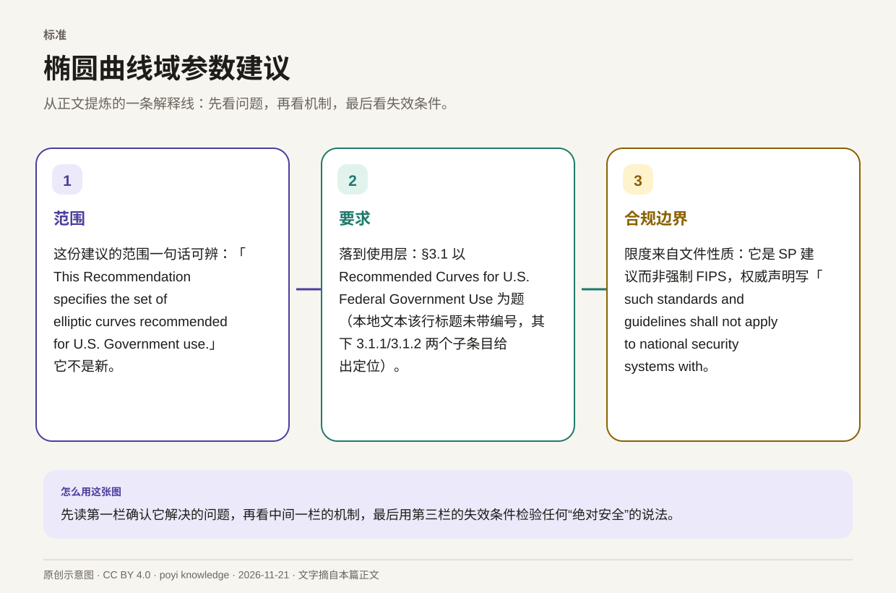
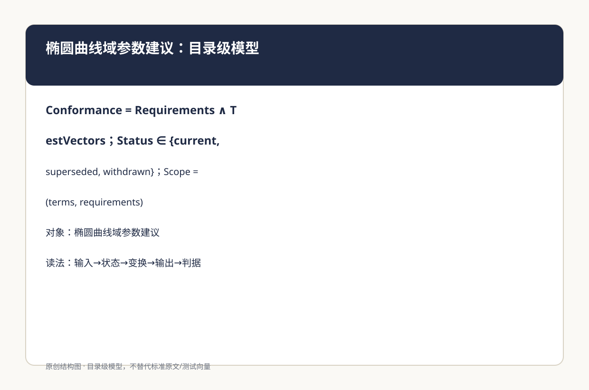

原理与机制
标准：椭圆曲线域参数建议（Recommendations for Discrete Logarithm-based Cryptography: Elliptic Curve Domain Parameters）。这份建议的范围一句话可辨：「This Recommendation specifies the set of elliptic curves recommended for U.S.Government use.」它不是新算法，而是给出曲线与其域参数的推荐集合。

为什么重要
新增曲线的理由是性能与实现安全性：「In addition to the previously recommended Weierstrass curves defined over prime fields and binary fields, this Recommendation includes two newly specified Edwards curves, which provide increased performance, side-channel resistance, and simpler implementation when compared to traditional curves.」并另给表示形式以容纳不同实现——「This Recommendation also specifies alternative representations for these new curves to allow more implementation flexibility.」
应用与实例
落到使用层：§3.1 以 Recommended Curves for U.S.Federal Government Use 为题（本地文本该行标题未带编号，其下 3.1.1/3.1.2 两个子条目给出定位），正文说明该节给出美国政府推荐使用的椭圆曲线，并给出私钥长度与底层域的选择；这就是选型清单的作用；摘要补充新曲线之间的互通性表述「The new curves are interoperable with those specified by the Crypto Forum Research Group (CFRG) of the Internet Engineering Task Force (IETF).」，把它们放在可与既有体系共同部署的位置上。

边界与攻击面
限度来自文件性质：它是 SP 建议而非强制 FIPS，权威声明写「such standards and guidelines shall not apply to national security systems without the express approval of appropriate federal officials exercising policy authority over such systems」，并加「Nothing in this publication should be taken to contradict the standards and guidelines made mandatory and binding on federal agencies by the Secretary of Commerce under statutory authority.」。真正的使用边界写在 §1：FIPS 186-4 中不达当前位安全要求的曲线「are now legacy-use.They may be used to process already protected information (e.g., decrypt or verify) but not to apply protection to information (e.g., encrypt or sign).」正文还提醒哪些要求不在验证范围内——「The requirements of this Recommendation are indicated by the word "shall." Some of these requirements may be out of scope for CAVP or CMVP validation testing and are thus the responsibility of entities using, implementing, installing, or configuring applications that incorporate this Recommendation.」。
历史与背景
版本位置可对照：文件标题行为「Recommendations for Discrete Logarithm-based Cryptography: Elliptic Curve Domain Parameters」，作者栏含 Lily Chen 等，发布于 2023 年；它接手的是曲线清单而非签名方案本身：SP 800-131A Rev.2 在 2019 年仍写明在本文发布前批准曲线以 FIPS 186-4 为准，本文件即该空缺的落地件，而签名算法仍由 FIPS 186-5 规定；文件自己也把旧曲线指回原处——「This curve is for legacy-use only.See [FIPS_186-4] for the specification.」
逐步示例与核验
形式模型与复算步骤
[S=\min_i S_i,\quad S_i\in{\text{密钥强度},\text{分组安全},\text{实现安全}}]
椭圆曲线域参数建议的公开参数、密钥/随机数与消息；变量说明：S 为综合安全强度；各分量取最小值，不能只看密钥位数。1.读取标准规定的密钥/分组/模式参数。2.按标准表换算等效强度。3.取最弱分量作为系统强度。边界：公式只覆盖已登记的参数与假设；参数取值、标准版本和实现细节仍以来源为准。
参考出处
- Wikipedia search entry for 椭圆曲线域参数建议. https://zh.wikipedia.org/w/index.php?search=%E6%A4%AD%E5%9C%86%E6%9B%B2%E7%BA%BF%E5%9F%9F%E5%8F%82%E6%95%B0%E5%BB%BA%E8%AE%AE
- Handbook of Applied Cryptography (Menezes, van Oorschot, Vanstone). https://www.cacr.math.uwaterloo.ca/hac/